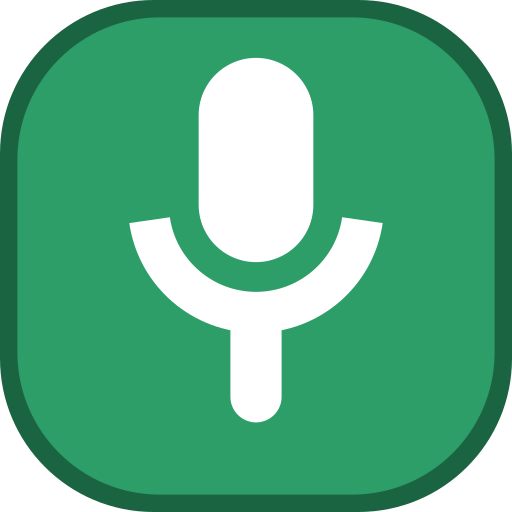

CuteMute
One keypress mutes your microphone. A badge on top of everything tells you it worked.
- Windows 10 & 11
- 10 MB, one file
- No installer
- Zero dependencies
- MIT
Windows will warn you the first time. Here is why, and what to do about it.
First run
Yes, Windows will warn you
CuteMute carries no Authenticode certificate, so SmartScreen shows “Windows protected your PC” and Windows calls the publisher unknown. That message is about a missing certificate and a missing download count. It is not a virus warning, and it is not a claim that anything was found.
Two free routes out of this exist, and both are built. The Microsoft Store package installs under a real publisher name with no prompt at all, because Microsoft signs what it distributes. And SignPath Foundation signs open-source releases with a real certificate at no cost, which the release pipeline is already wired for. Both are waiting on a review by someone other than me; until then this page tells you the truth about the file, and every release says plainly whether that build is signed.
More info
The dialog hides its own Run button. Click More info and it appears, along with the app and publisher name that CuteMute stamps into its own version resource.
Run anyway
Once is enough. Windows remembers the choice for that copy of the file, and CuteMute starts, shows its window, and adds itself to the Start menu.
Or skip the dialog
The prompt is triggered by the “downloaded from the internet” tag your browser attaches. Verify the file first, then remove the tag: Unblock-File .\CuteMute.exe
Verify
Check the download before you trust it
Every release is signed with Sigstore by the GitHub Actions workflow that built it. There is no private key anywhere — not on a runner, not in a repository secret, not on a laptop — so there is no key to be stolen and none for you to have to trust. What you check instead is a public transparency log that anyone can read.
python -m pip install sigstore python -m sigstore verify github CuteMute.exe ` --bundle CuteMute.exe.sigstore.json ` --cert-identity "https://github.com/FzArnob/cute-mute/.github/workflows/release.yml@refs/tags/v1.0.0" ` --repository FzArnob/cute-mute
Download CuteMute.exe.sigstore.json from the same release, put
it beside the exe, and run that. A line reading OK is a proof of
four things at once:
It is unmodified
The signature covers a hash of the exe. One flipped byte anywhere and verification fails.
A workflow built it
The identity is a file path in this repository. Not a person, not a key — a build script you can read.
From that tag
The identity ends in the git ref. Change the tag in the command and it stops matching.
Publicly, at that time
The signature is in Sigstore's transparency log. It cannot be created quietly or removed later.
Swap the tag in --cert-identity for whichever version you
downloaded — each release page carries the exact command. If you would
rather just compare a hash, every release also ships
SHA256SUMS:
(Get-FileHash CuteMute.exe -Algorithm SHA256).Hash.ToLower() # compare with the line in SHA256SUMS
What it does
A mute key, and proof that it worked
The badge is the point. Muting is easy; knowing whether you are muted is the part every meeting gets wrong.
One key, anywhere
A low-level keyboard hook, so it works while any app has focus. Tab by default; pick anything, including F13 or a chord.
Watches, or swallows
By default the key still reaches the app underneath, so Tab keeps indenting. Flip one switch and CuteMute keeps it to itself.
A 20 px badge, always on top
A layered window with per-pixel alpha — genuinely anti-aliased, click-through, never steals focus, never appears in Alt+Tab.
Both default mics
Windows keeps a console default and a communications default. They are often the same device. When they are not, one keypress still silences both.
Nothing to save
Settings write themselves a quarter-second after you stop fiddling and take effect immediately. There is no Save button to forget.
Flat-zero idle CPU
Four threads, each blocked on something the kernel wakes it for. Measured at 0 ms over 15 seconds — below the clock's own granularity.
How it works
The realtime path is short on purpose
If a low-level keyboard hook takes longer than 300 ms, Windows silently tears it down — and a slow hook delays every keystroke on the machine, in every application. So the hook callback compares a few integers, pushes to a queue, and returns. Audio, COM and the badge all happen after the fact.
hook callback -> queue.put_nowait -> audio thread -> IAudioEndpointVolume::SetMute (integer compares only) (~3 ms, measured)
| Measured | |
|---|---|
| Idle CPU | 0 ms over 15 s — below the 15.6 ms clock granularity |
| Working set | ~25 MB, of which ~12 MB private |
| Mute latency | ~3 ms for the Core Audio call; hook overhead is sub-millisecond |
| Dependencies | none — stdlib Python and direct Win32/COM calls through ctypes |
No pycaw, no comtypes, no Pillow. Core Audio is called through its COM
vtables directly, in about eighty lines. The icon you have been looking at
is rasterised in code from signed-distance tests, which is why the overlay,
the tray icon, the .ico, and the logo on this page are all the
same drawing at different sizes.
The full write-up is in the README.

Stop wondering whether you are muted
One file, no installer, nothing running that you did not put there.